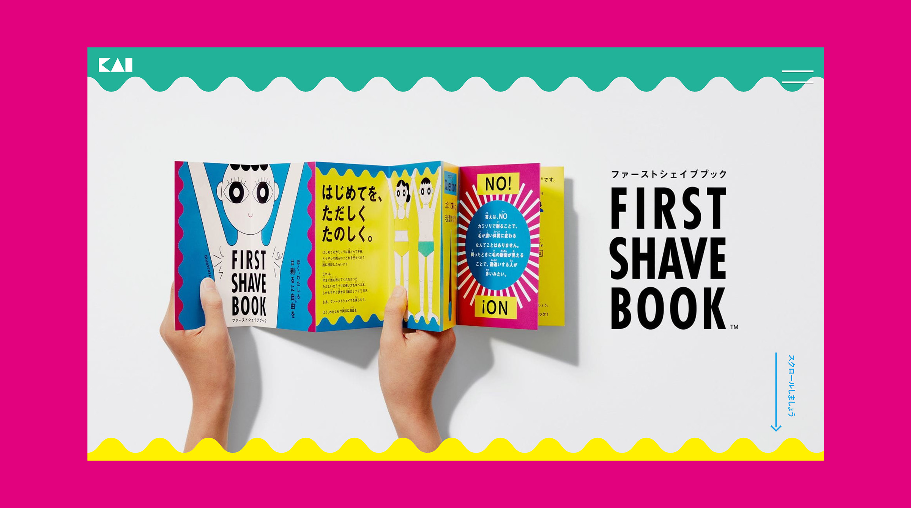
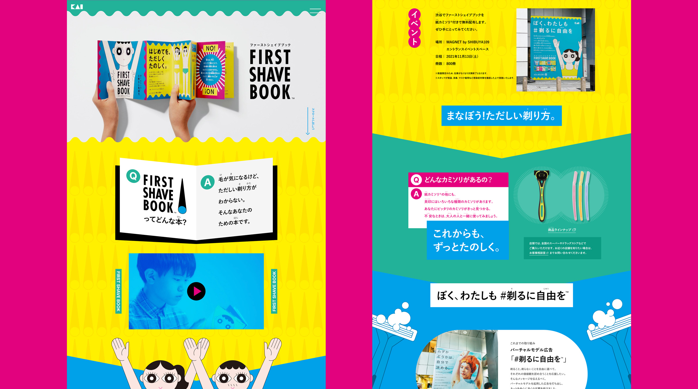
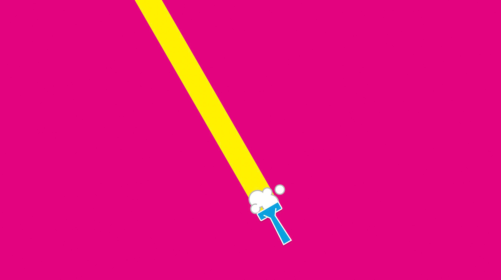

FIRST SHAVE BOOK
刃物メーカーの貝印によるブランドアクション「#剃るに自由を」。
毛の剃り方が分からない子どもたちに向け、剃り方説明書を開発した施策のWebサイト制作を行いました。
イラストのトーンを活かし、Webもグラフィカルで賑々しい雰囲気に。
オンマウスなどのマイクロインタラクションも細かく設計しました。
Pr/Dr : Shiiki Hikaru D : Matsuoka Asuka Dev : Namba Eisuke Illustrator : Uryu Taro
2022